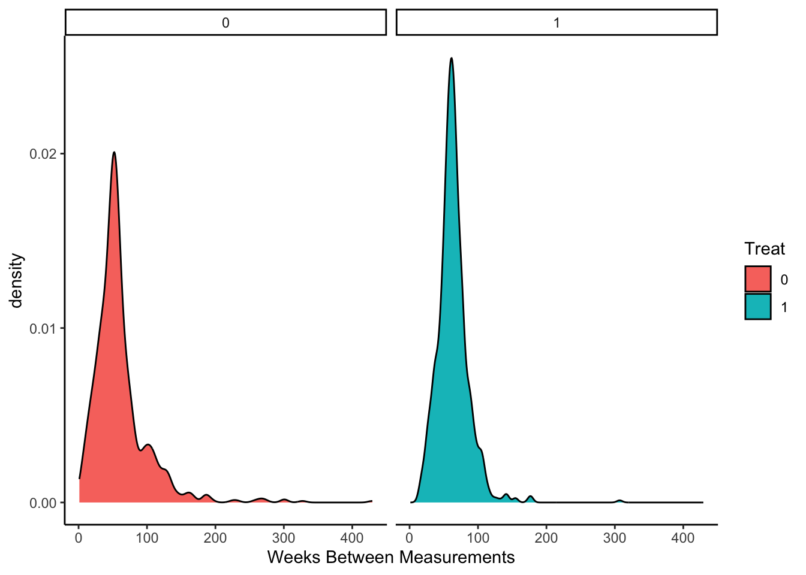

MoreSelective
2023-11-24
Last updated: 2023-11-30
Checks: 5 2
Knit directory: ~/multistate2/
This reproducible R Markdown analysis was created with workflowr (version 1.7.1). The Checks tab describes the reproducibility checks that were applied when the results were created. The Past versions tab lists the development history.
The R Markdown is untracked by Git. To know which version of the R
Markdown file created these results, you’ll want to first commit it to
the Git repo. If you’re still working on the analysis, you can ignore
this warning. When you’re finished, you can run
wflow_publish to commit the R Markdown file and build the
HTML.
Great job! The global environment was empty. Objects defined in the global environment can affect the analysis in your R Markdown file in unknown ways. For reproduciblity it’s best to always run the code in an empty environment.
The command set.seed(20230211) was run prior to running
the code in the R Markdown file. Setting a seed ensures that any results
that rely on randomness, e.g. subsampling or permutations, are
reproducible.
Great job! Recording the operating system, R version, and package versions is critical for reproducibility.
Nice! There were no cached chunks for this analysis, so you can be confident that you successfully produced the results during this run.
Using absolute paths to the files within your workflowr project makes it difficult for you and others to run your code on a different machine. Change the absolute path(s) below to the suggested relative path(s) to make your code more reproducible.
| absolute | relative |
|---|---|
| ~/multistate2/code/utils.R | code/utils.R |
Great! You are using Git for version control. Tracking code development and connecting the code version to the results is critical for reproducibility.
The results in this page were generated with repository version 0aa467f. See the Past versions tab to see a history of the changes made to the R Markdown and HTML files.
Note that you need to be careful to ensure that all relevant files for
the analysis have been committed to Git prior to generating the results
(you can use wflow_publish or
wflow_git_commit). workflowr only checks the R Markdown
file, but you know if there are other scripts or data files that it
depends on. Below is the status of the Git repository when the results
were generated:
Ignored files:
Ignored: .DS_Store
Ignored: .Rproj.user/
Ignored: analysis/.DS_Store
Ignored: code/.DS_Store
Ignored: data/
Ignored: lesliepics/.DS_Store
Ignored: output/
Ignored: plots/.DS_Store
Untracked files:
Untracked: analysis/glp1moreseelctive_withweight.Rmd
Unstaged changes:
Modified: analysis/glp1moreseelctive.Rmd
Modified: analysis/klashier.Rmd
Note that any generated files, e.g. HTML, png, CSS, etc., are not included in this status report because it is ok for generated content to have uncommitted changes.
There are no past versions. Publish this analysis with
wflow_publish() to start tracking its development.
let’s be more selective and select first and last script date
- Here we grab the first script date and the last script date for treated individuals
source("~/multistate2/code/utils.R")
library(MatchIt)
prs_subset=readRDS("~/Library/CloudStorage/Dropbox-Personal/pheno_dir/prs_subset.rds")
#glp1=fread("~/Library/CloudStorage/Dropbox-Personal//glp1s.txt")
df_baseline=readRDS("~/Library/CloudStorage/Dropbox-Personal/pheno_dir/output/dfukb_baseline.rds")
glp1=fread("~/Library/CloudStorage/Dropbox-Personal//glp1s_withi.txt")
colnames(glp1)[1]=c("Identifier")
colnames(glp1)[3]=c("event_dt")
glp1$event_dt <- as.Date(glp1$event_dt, format="%d/%m/%Y")
biomarkers=readRDS("~/Library/CloudStorage/Dropbox-Personal/ukbb-ehr-data/data/biomarkers.rds")
#bmi=biomarkers[biomarkers$variable%in%"bmi",]
bmi=biomarkers[biomarkers$variable%in%"weight",]
bmi$date <- as.Date(bmi$date, format="%Y/%m/%d")
patient_med_data <- glp1 %>%
group_by(Identifier) %>%
summarize(first_script_date = min(event_dt),last_script_date = max(event_dt))
colnames(patient_med_data)=c("eid","first_script_date","last_script_date")
patient_med_data$first_script_date <- as.Date(patient_med_data$first_script_date, format = "%Y-%m-%d")
patient_med_data$last_script_date <- as.Date(patient_med_data$last_script_date, format = "%Y-%m-%d")Treated Folks
- We grab the first BMI as the median BMI that is within 1 year of the first script date
- We grab the post-treat BMI as the median BMI that is within 12 weeks after 1st script to 1 year after last.
- We tried the last measurement before but it is noisy to use the final measurement only, we can also see how many measurements folks had
patient_bmi_data=bmi[bmi$eid%in%patient_med_data$eid,c("eid","date","value")]
bbmi=df_baseline[,c("identifier","f.53.0.0","f.21001.0.0")]
bbmi$f.53.0.0=as.Date(bbmi$f.53.0.0)
patient_bmi_data=rbind(patient_bmi_data,bbmi[,c("identifier","f.53.0.0","f.21001.0.0")],use.names=FALSE)
patient_bmi_data$date <- as.Date(patient_bmi_data$date, format = "%Y-%m-%d")
merged_data <- merge(patient_bmi_data, patient_med_data, by = "eid")
bmi_before_script <- merged_data %>%
filter(date < first_script_date & date > (first_script_date - years(1)))%>%
group_by(eid) %>%
summarise("beforedate"=min(date),"medbmi"=median(value),"number"=length(value),)
summary(bmi_before_script$number) Min. 1st Qu. Median Mean 3rd Qu. Max.
1.000 1.000 2.000 2.688 3.000 11.000 bmi_after_script <- merged_data %>%
filter(date > (first_script_date + weeks(12)) & date < (last_script_date + years(1))) %>%
group_by(eid) %>%
summarise("afterdate"=min(date),"medbmi"=median(value),"number"=length(value))
summary(bmi_after_script$number) Min. 1st Qu. Median Mean 3rd Qu. Max.
1.000 3.000 5.000 6.663 9.000 64.000 Now we merge the first and last BMI measurements with the script data and perform checks
- to make sure first measure is before drug start
- check to make sure last BMI measure is at least 12 weeks after drug start
final_data <- (bmi_before_script[,c("eid","beforedate","medbmi")]) %>%
left_join(patient_med_data[,c("eid","first_script_date","last_script_date")], by = "eid") %>%
left_join(bmi_after_script[,c("eid","afterdate","medbmi")], by = "eid")
colnames(final_data)=c("eid","pretreat_measure_date","pretreat_bmi","first_script_date","last_script_date","post_drug_measure_date","post_drug_bmi")
final_data=na.omit(final_data)
summary(year(final_data$pretreat_measure_date)) Min. 1st Qu. Median Mean 3rd Qu. Max.
2006 2010 2011 2011 2013 2016 summary(year(final_data$post_drug_measure_date)) Min. 1st Qu. Median Mean 3rd Qu. Max.
2007 2011 2013 2013 2014 2017 # check to make sure first measure is before drug start
sum(difftime(final_data$first_script_date,final_data$pretreat_measure_date)<0)[1] 0sum(difftime(final_data$pretreat_measure_date,final_data$post_drug_measure_date,units = "days")==0)[1] 0# check to make sure last BMI measure is at least 12 weeks after drug start
sum(difftime(final_data$post_drug_measure_date,final_data$first_script_date,units = "days")<83)[1] 0## controlswe will choose controls to mirror our selection above
This is less clearcut for controls so …
- First BMI median between the treated populations pretreat measure dates (min,max pre_treat_date)
- Last BMI median between the treated populations post-treat measure dates
controls=bmi[!bmi$eid%in%patient_med_data$eid,]
## since there is no med, grab first and last measruement
## find measruements around the time of treated
bmi_controls_first <- controls %>%
filter(date >= min((final_data$pretreat_measure_date)) & date < max((final_data$pretreat_measure_date))) %>%
group_by(eid) %>%
summarise("beforedate"=min(date),"meanbmi"=median(value),"number"=length(value))
summary(bmi_controls_first$beforedate) Min. 1st Qu. Median Mean 3rd Qu. Max.
"2006-12-14" "2007-10-11" "2008-05-07" "2008-07-03" "2009-03-25" "2016-04-25" summary(bmi_controls_first$number) Min. 1st Qu. Median Mean 3rd Qu. Max.
1.000 2.000 4.000 5.359 7.000 215.000 bmi_controls_last <- controls %>%
filter(date >= min(final_data$post_drug_measure_date) & date < max(final_data$post_drug_measure_date)) %>%
group_by(eid) %>%
summarise("afterdate"=min(date),"meanbmi"=median(value),"number"=length(value))
summary(bmi_controls_last$afterdate) Min. 1st Qu. Median Mean 3rd Qu. Max.
"2007-11-29" "2008-04-07" "2008-10-04" "2008-12-23" "2009-07-02" "2017-05-10" summary(bmi_controls_last$number) Min. 1st Qu. Median Mean 3rd Qu. Max.
1.000 2.000 4.000 5.176 7.000 197.000 final_data_controls=
inner_join(bmi_controls_first[,c("eid","beforedate","meanbmi")], bmi_controls_last[,c("eid","afterdate","meanbmi")],by = "eid", suffix = c("_before", "_after"))
# remote those in which dates are the same
final_data_controls=final_data_controls[final_data_controls$beforedate!=final_data_controls$afterdate,]Again, checks:
# check to make sure last BMI measure is at least 12 weeks after drug start
sum(difftime(final_data_controls$afterdate,final_data_controls$beforedate,units = "days")>0)[1] 67037sum(difftime(final_data_controls$afterdate,final_data_controls$beforedate,units = "days")==0)[1] 0## treated
summary(year(final_data$pretreat_measure_date)) Min. 1st Qu. Median Mean 3rd Qu. Max.
2006 2010 2011 2011 2013 2016 summary(year(final_data$post_drug_measure_date)) Min. 1st Qu. Median Mean 3rd Qu. Max.
2007 2011 2013 2013 2014 2017 ## controls
summary(year(final_data_controls$beforedate)) Min. 1st Qu. Median Mean 3rd Qu. Max.
2006 2007 2007 2007 2007 2007 summary(year(final_data_controls$afterdate)) Min. 1st Qu. Median Mean 3rd Qu. Max.
2007 2008 2008 2009 2009 2017 final_data$treat=1
final_data_controls$treat=0
treat=final_data[,c("eid","pretreat_bmi","post_drug_bmi","pretreat_measure_date","post_drug_measure_date","treat","first_script_date")]
untreat=final_data_controls[,c("eid","meanbmi_before","meanbmi_after","beforedate","afterdate","treat","beforedate")]
names(untreat)=names(treat)
all_data=rbind(treat,untreat)
all_data$time_diff=difftime(all_data$post_drug_measure_date,all_data$pretreat_measure_date,units = "days")
df=merge(all_data,df_baseline[,c("identifier","f.34.0.0","f.31.0.0")],by.x="eid",by.y="identifier")
df_with_prs=merge(df,prs_subset[,c("Identifier","BMI")],by.x="eid",by.y="Identifier")now we perform matching on
- duration between measurements
- patient birthday
- sex
- pretreat BMI
## now match on pretreat bmi
matcher=matchit(treat~pretreat_bmi+f.34.0.0+f.31.0.0+time_diff,data = df_with_prs)
summary(matcher)
Call:
matchit(formula = treat ~ pretreat_bmi + f.34.0.0 + f.31.0.0 +
time_diff, data = df_with_prs)
Summary of Balance for All Data:
Means Treated Means Control Std. Mean Diff. Var. Ratio eCDF Mean
distance 0.0584 0.0117 0.5163 11.6475 0.3578
pretreat_bmi 105.3417 79.3438 1.2738 1.4803 0.3158
f.34.0.0 1951.1953 1950.1495 0.1451 0.8340 0.0378
f.31.0.00 0.4373 0.5466 -0.2203 . 0.1093
f.31.0.01 0.5627 0.4534 0.2203 . 0.1093
time_diff 445.0602 570.0419 -0.7696 0.1094 0.0548
eCDF Max
distance 0.5637
pretreat_bmi 0.5457
f.34.0.0 0.1073
f.31.0.00 0.1093
f.31.0.01 0.1093
time_diff 0.1901
Summary of Balance for Matched Data:
Means Treated Means Control Std. Mean Diff. Var. Ratio eCDF Mean
distance 0.0584 0.0583 0.0014 1.0131 0.0000
pretreat_bmi 105.3417 105.0803 0.0128 1.0719 0.0062
f.34.0.0 1951.1953 1951.2408 -0.0063 0.8744 0.0141
f.31.0.00 0.4373 0.4447 -0.0149 . 0.0074
f.31.0.01 0.5627 0.5553 0.0149 . 0.0074
time_diff 445.0602 422.9042 0.1364 0.3669 0.0290
eCDF Max Std. Pair Dist.
distance 0.0037 0.0025
pretreat_bmi 0.0258 0.2073
f.34.0.0 0.0418 1.1877
f.31.0.00 0.0074 0.8618
f.31.0.01 0.0074 0.8618
time_diff 0.2359 1.3252
Sample Sizes:
Control Treated
All 65263 814
Matched 814 814
Unmatched 64449 0
Discarded 0 0#extract matched data
match_dat=match.data(matcher)
match_dat$bmi.prs=match_dat$BMI
#extract matched data
match_dat=match.data(matcher)
match_dat$bmi.prs=match_dat$BMI
#eliminate those with CAD at baseline measure
#match_dat=match_dat[match_dat$Cad_censor_age>match_dat$first_bmi_age,]
match_dat$delta=match_dat$post_drug_bmi-match_dat$pretreat_bmi
summary(lm(delta~treat+treat:bmi.prs+pretreat_bmi,match_dat))
Call:
lm(formula = delta ~ treat + treat:bmi.prs + pretreat_bmi, data = match_dat)
Residuals:
Min 1Q Median 3Q Max
-50.966 -1.534 0.051 1.923 51.806
Coefficients:
Estimate Std. Error t value Pr(>|t|)
(Intercept) 4.730728 0.719873 6.572 6.69e-11 ***
treat -3.932461 0.286412 -13.730 < 2e-16 ***
pretreat_bmi -0.043498 0.006616 -6.574 6.57e-11 ***
treat:bmi.prs -0.440537 0.197757 -2.228 0.026 *
---
Signif. codes: 0 '***' 0.001 '**' 0.01 '*' 0.05 '.' 0.1 ' ' 1
Residual standard error: 5.325 on 1624 degrees of freedom
Multiple R-squared: 0.1577, Adjusted R-squared: 0.1561
F-statistic: 101.3 on 3 and 1624 DF, p-value: < 2.2e-16We examine distribution of delta by treatment and BMI
load("~/Library/CloudStorage/Dropbox-Personal/pheno_dir/output/merged_pheno_censor_final_withdrugs_smoke.rds")
pheno=dfh
match_dat=merge(match_dat,pheno,by.x="eid",by.y="identifier")
match_dat$enrollage=difftime(match_dat$f.53.0.0,match_dat$Birthdate,units = "days")/365.25
match_dat$first_bmi_age=difftime(match_dat$pretreat_measure_date,match_dat$Birthdate,units = "days")/365.25
library(table1)
dat=match_dat
dat$HyperLip_0_Any=factor(dat$HyperLip_0_Any,levels = c(1,2),labels = c("No","Yes"))
dat$Ht_0_Any=factor(dat$Ht_0_Any,levels = c(1,2),labels = c("No","Yes"))
dat$Dm_0_Any=factor(dat$Dm_0_Any,levels = c(1,2),labels = c("No","Yes"))
dat$f.31.0.0.x=factor(dat$f.31.0.0.x,levels = c(0,1),labels = c("Female","Male"))
dat$enrollage=as.numeric(dat$enrollage)
dat$smoke=factor(dat$smoke,levels=c(0,1),labels = c("No","Yes"))
dat$antihtn=factor(dat$antihtn,levels=c(0,1),labels = c("No","Yes"))
dat$statin=factor(dat$statin,levels=c(0,1),labels = c("No","Yes"))
dat$treat=factor(dat$treat,levels=c(0,1),labels=c("Untreated","Treated"))
label(dat$f.31.0.0.x)<- "Sex"
label(dat$enrollage) <- "Age"
label(dat$pretreat_bmi) <- "Pre-Treat BMI"
label(dat$HyperLip_0_Any) = "Hyperlipidemia"
label(dat$Ht_0_Any) = "Hypertension"
label(dat$Dm_0_Any) = "Diabetes Type 2"
dat$treat=as.factor(dat$treat)
label(dat$statin)="Statin"
label(dat$smoke)="Current Smoker"
label(dat$antihtn)="Anti Htn"
# One level of stratification
table1(~f.31.0.0.x + enrollage +pretreat_bmi+HyperLip_0_Any+Ht_0_Any+Dm_0_Any+statin+smoke+antihtn|treat,dat)| Untreated (N=803) |
Treated (N=807) |
Overall (N=1610) |
|
|---|---|---|---|
| Sex | |||
| Female | 356 (44.3%) | 354 (43.9%) | 710 (44.1%) |
| Male | 447 (55.7%) | 453 (56.1%) | 900 (55.9%) |
| Age | |||
| Mean (SD) | 57.3 (7.75) | 57.4 (7.25) | 57.4 (7.50) |
| Median [Min, Max] | 58.4 [40.2, 70.0] | 58.4 [40.8, 70.3] | 58.4 [40.2, 70.3] |
| Pre-Treat BMI | |||
| Mean (SD) | 105 (19.7) | 105 (20.4) | 105 (20.0) |
| Median [Min, Max] | 103 [51.0, 180] | 103 [52.0, 188] | 103 [51.0, 188] |
| Hyperlipidemia | |||
| No | 488 (60.8%) | 279 (34.6%) | 767 (47.6%) |
| Yes | 315 (39.2%) | 528 (65.4%) | 843 (52.4%) |
| Hypertension | |||
| No | 260 (32.4%) | 111 (13.8%) | 371 (23.0%) |
| Yes | 543 (67.6%) | 696 (86.2%) | 1239 (77.0%) |
| Diabetes Type 2 | |||
| No | 537 (66.9%) | 2 (0.2%) | 539 (33.5%) |
| Yes | 266 (33.1%) | 805 (99.8%) | 1071 (66.5%) |
| Statin | |||
| No | 331 (41.2%) | 41 (5.1%) | 372 (23.1%) |
| Yes | 472 (58.8%) | 766 (94.9%) | 1238 (76.9%) |
| Current Smoker | |||
| No | 727 (90.5%) | 718 (89.0%) | 1445 (89.8%) |
| Yes | 76 (9.5%) | 89 (11.0%) | 165 (10.2%) |
| Anti Htn | |||
| No | 217 (27.0%) | 69 (8.6%) | 286 (17.8%) |
| Yes | 586 (73.0%) | 738 (91.4%) | 1324 (82.2%) |
Now let’s plot some stuff
library(ggplot2)
ggplot(match_dat,aes(y=delta,x=treat,group=treat,fill=as.factor(treat)))+
geom_boxplot()+labs(y="Change in Weight (kg) ",x="Treat",fill="Treat")+theme_classic()
ggplot(match_dat,aes(x=as.numeric(time_diff)/7,fill=as.factor(treat)))+geom_density()+
labs(x="Weeks Between Measurements",main="Density",fill="Treat")+facet_wrap(~treat)+theme_classic()pop.quants=quantile(prs_subset$BMI,probs = seq(0,1,by=0.25))
match_dat$prs.group=cut(match_dat$bmi.prs,breaks = pop.quants,labels = c(1:4))
levels(match_dat$treat) <- c("Untreated", "Treated")
ggplot(match_dat,aes(y=delta,x=prs.group,group=prs.group,fill=as.factor(prs.group)))+
geom_boxplot()+labs(y="Change in Weight (kg)",x="PRS Quartile (population based)",fill="Prs Quartile")+theme_classic()+facet_wrap(~as.factor(treat),nrow = 1)
# Assuming you have a dataframe 'data' with columns 'baseline_BMI', 'change_in_BMI', and 'PRS'
match_dat$treat=factor(match_dat$treat,levels = c(0,1),labels=c("Untreated","Treated"))
ggplot(match_dat, aes(x = pretreat_bmi, y = delta,col=prs.group)) +
geom_point() + # Adjust the geom as necessary
facet_grid(treat ~ prs.group) +
labs(title = "Delta vs Baseline BMI by Treatment Status and PRS Quartiles",
x = "Baseline Wt",
y = "Delta Wt",
col="BMI PRS Quartile",
caption = "PRS Quartiles: 1 (Lowest) to 4 (Highest)") +
theme_classic()
library(ggplot2)
# Assuming your dataframe is named 'data' with 'baseline_BMI', 'change_in_BMI', 'PRS', and 'treatment_group'
ggplot(match_dat, aes(x = pretreat_bmi, y = delta, size = bmi.prs, color = as.factor(treat))) +
geom_point(alpha = 0.7) + # Adjust alpha for bubble transparency if needed
scale_size_continuous(range = c(1, 10)) + # Adjust bubble size range as needed
scale_color_brewer(palette = "Set1") + # Choose a color palette that suits your data
labs(title = "Bubble Plot of Change in BMI by Baseline BMI, PRS, and Treatment",
x = "Baseline Wt ",
y = "Change in Wt",
size = "PRS") +
theme_minimal() +
guides(color = guide_legend(title = "Treatment Group"), size = guide_legend(title = "PRS"))
And here we summarize by population bmi.prs quartiles:
match_dat[match_dat$treat=="Untreated",]%>%group_by(prs.group)%>%summarise(median(delta),IQR(delta),sd(delta))# A tibble: 4 × 4
prs.group `median(delta)` `IQR(delta)` `sd(delta)`
<fct> <dbl> <dbl> <dbl>
1 1 0.100 0.988 2.36
2 2 0.100 1.06 1.79
3 3 0 1.18 2.15
4 4 0 0.900 2.31match_dat[match_dat$treat=="Treated",]%>%group_by(prs.group)%>%summarise(median(delta),IQR(delta),sd(delta))# A tibble: 4 × 4
prs.group `median(delta)` `IQR(delta)` `sd(delta)`
<fct> <dbl> <dbl> <dbl>
1 1 -2.5 6.88 6.53
2 2 -2.69 5.96 6.29
3 3 -3.35 5.84 6.98
4 4 -3.77 8.46 8.07dft=match_dat[match_dat$treat=="Treated",]%>%group_by(prs.group)%>%summarise(mean_change=median(delta),
iqr=IQR(delta),
sd=sd(delta),
)
dfu=match_dat[match_dat$treat=="Untreated",]%>%group_by(prs.group)%>%summarise(mean_change=median(delta),
iqr=IQR(delta),
sd=sd(delta),
)
library(ggplot2)
treat=ggplot(dft, aes(x = prs.group, y = mean_change)) +
geom_point() +
geom_errorbar(aes(ymin = mean_change-1.96*sd, ymax = mean_change+1.96*sd), width = 0.1) +
coord_flip() + # Flips the axes
xlab("PRS Quartile") +
ylab("Change in Weight (kg),Treated") +
theme_minimal()
untreat=ggplot(dfu, aes(x = prs.group, y = mean_change)) +
geom_point() +
geom_errorbar(aes(ymin = mean_change-1.96*sd, ymax = mean_change+1.96*sd), width = 0.1) +
coord_flip() + # Flips the axes
xlab("PRS Quartile") +
ylab("Change in Weight (kg), Untreated") +
theme_minimal()
ggarrange(untreat,treat,nrow=1)Plot Delta Weight by BMI.prs
ggplot(data = match_dat,aes(x=bmi.prs,y=delta,col=as.factor(treat),fill=as.factor(treat)))+geom_point()+stat_smooth()+facet_wrap(~treat)+labs(y="Delta Weight (kg)",x="BMI PRS")+theme_classic()ggplot(data = match_dat,aes(x=pretreat_bmi,y=delta,col=as.factor(treat),fill=as.factor(treat)))+geom_point()+stat_smooth()+facet_wrap(~treat)+labs(y="Delta Weight (kg)",x="PreTreat BMI")+theme_classic()
sessionInfo()R version 4.3.1 (2023-06-16)
Platform: aarch64-apple-darwin20 (64-bit)
Running under: macOS Sonoma 14.0
Matrix products: default
BLAS: /Library/Frameworks/R.framework/Versions/4.3-arm64/Resources/lib/libRblas.0.dylib
LAPACK: /Library/Frameworks/R.framework/Versions/4.3-arm64/Resources/lib/libRlapack.dylib; LAPACK version 3.11.0
locale:
[1] en_US.UTF-8/en_US.UTF-8/en_US.UTF-8/C/en_US.UTF-8/en_US.UTF-8
time zone: America/New_York
tzcode source: internal
attached base packages:
[1] stats graphics grDevices utils datasets methods base
other attached packages:
[1] table1_1.4.3 MatchIt_4.5.5 babynames_1.0.1 gapminder_1.0.0
[5] carData_3.0-5 plotly_4.10.3 DT_0.30 gt_0.10.0
[9] RColorBrewer_1.1-3 data.table_1.14.8 pROC_1.18.5 rsq_2.6
[13] survMisc_0.5.6 gridExtra_2.3 ggfortify_0.4.16 reshape_0.8.9
[17] eulerr_7.0.0 survminer_0.4.9 ggpubr_0.6.0 survival_3.5-7
[21] lubridate_1.9.3 forcats_1.0.0 stringr_1.5.1 purrr_1.0.2
[25] readr_2.1.4 tidyr_1.3.0 tibble_3.2.1 ggplot2_3.4.4
[29] tidyverse_2.0.0 dplyr_1.1.4 ggsci_3.0.0
loaded via a namespace (and not attached):
[1] rlang_1.1.2 magrittr_2.0.3 git2r_0.32.0 deming_1.4
[5] compiler_4.3.1 mgcv_1.9-0 vctrs_0.6.4 pkgconfig_2.0.3
[9] fastmap_1.1.1 backports_1.4.1 labeling_0.4.3 KMsurv_0.1-5
[13] utf8_1.2.4 promises_1.2.1 rmarkdown_2.25 tzdb_0.4.0
[17] nloptr_2.0.3 bit_4.0.5 xfun_0.41 cachem_1.0.8
[21] jsonlite_1.8.7 highr_0.10 later_1.3.1 chk_0.9.1
[25] Deriv_4.1.3 broom_1.0.5 R6_2.5.1 bslib_0.6.0
[29] stringi_1.8.2 car_3.1-2 boot_1.3-28.1 jquerylib_0.1.4
[33] Rcpp_1.0.11 knitr_1.45 zoo_1.8-12 httpuv_1.6.12
[37] Matrix_1.6-3 splines_4.3.1 timechange_0.2.0 tidyselect_1.2.0
[41] rstudioapi_0.15.0 abind_1.4-5 yaml_2.3.7 lattice_0.22-5
[45] plyr_1.8.9 withr_2.5.2 evaluate_0.23 xml2_1.3.5
[49] pillar_1.9.0 generics_0.1.3 rprojroot_2.0.4 hms_1.1.3
[53] munsell_0.5.0 scales_1.2.1 minqa_1.2.6 xtable_1.8-4
[57] glue_1.6.2 lazyeval_0.2.2 tools_4.3.1 lme4_1.1-35.1
[61] ggsignif_0.6.4 fs_1.6.3 cowplot_1.1.1 grid_4.3.1
[65] colorspace_2.1-0 nlme_3.1-163 Formula_1.2-5 cli_3.6.1
[69] km.ci_0.5-6 workflowr_1.7.1 fansi_1.0.5 viridisLite_0.4.2
[73] gtable_0.3.4 rstatix_0.7.2 sass_0.4.7 digest_0.6.33
[77] farver_2.1.1 htmlwidgets_1.6.3 htmltools_0.5.7 lifecycle_1.0.4
[81] httr_1.4.7 bit64_4.0.5 MASS_7.3-60